Capítulo visual · Termorregulación
Dos preguntas.
Cinco combinaciones.
Para clasificar la estrategia térmica de un animal no basta con preguntar si está “caliente” o “frío”. Hay que separar de dónde obtiene el calor y qué tan estable permanece su temperatura corporal.
Fuente¿Metabolismo o ambiente?
Estabilidad¿Estable, variable o alternante?
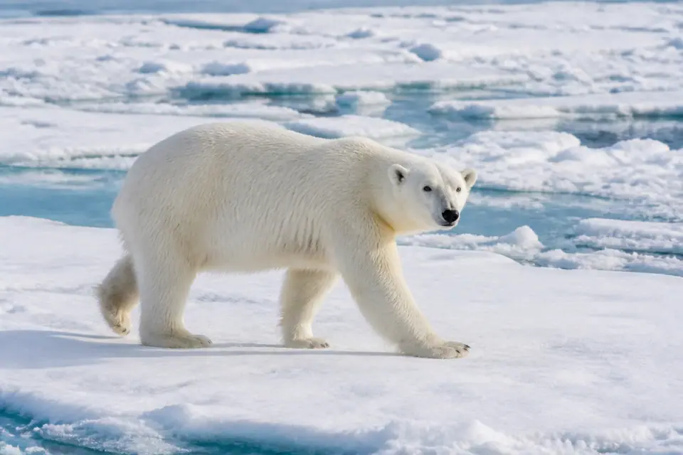
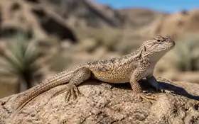
independientes
01 · Primer eje
Clasificación de acuerdo al modo de producción de calor: Endotermos vs Ectotermos
Este eje describe la fuente principal del calor que determina la temperatura corporal. Todos los animales producen calor metabólico, pero no todos dependen de él en la misma proporción.
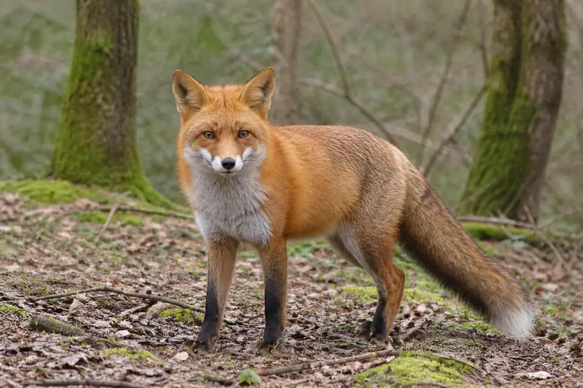
Calor desde dentroMetabolismo como fuente principal
Endotermos
Generan internamente la mayor parte del calor corporal mediante reacciones metabólicas. Las aves y los mamíferos son los ejemplos más conocidos.
Esta estrategia permite sostener actividad aun cuando el ambiente está frío, pero tiene un costo energético: producir calor exige combustible y, por tanto, alimento.
- Pregunta útil
- ¿El metabolismo aporta la mayor parte del calor?
- No significa
- Que la temperatura sea siempre idéntica.
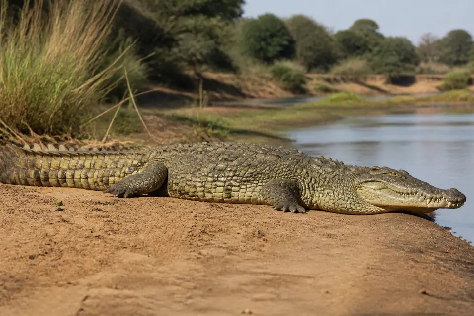
Calor desde el ambienteAmbiente como fuente principal
Ectotermos
Obtienen del sol, el aire, el agua o el suelo la mayor parte del calor que determina su temperatura corporal. Reptiles, anfibios, la mayoría de los peces y muchos invertebrados pertenecen a este grupo.
No son necesariamente “animales fríos”. Una lagartija al sol puede alcanzar una temperatura corporal alta. Además, muchos ectotermos regulan su exposición moviéndose entre sol, sombra, agua y refugios.
- Pregunta útil
- ¿El entorno aporta la mayor parte del calor?
- No significa
- Que el animal carezca de conducta termorreguladora.
02 · Segundo eje
Clasificación de acuerdo a la estabilidad de la temperatura corporal: Homeotermos, Poiquilothermos, y Heterotermos
Ahora no importa de dónde proviene el calor. La pregunta es qué patrón presenta la temperatura corporal a lo largo del tiempo.
Variación estrecha
Homeotermos
Mantienen su temperatura corporal dentro de un intervalo relativamente estrecho frente a cambios ambientales. “Estable” no quiere decir absolutamente constante: existen ritmos diarios, actividad física y pequeñas oscilaciones.
Ejemplos: pingüino, zorro, elefante y peces que viven en agua antártica muy estable.
Variación amplia
Poiquilotermos
Su temperatura corporal fluctúa de manera considerable. Con frecuencia cambia junto con la temperatura ambiental, aunque el animal puede modificarla conductualmente al escoger microambientes.
Ejemplos: lagartija, rana, serpiente, pulpo y, en este curso, rata topo desnuda.
Alternancia entre periodos
Heterotermos
Alternan etapas de temperatura relativamente estable con otras de descenso o variación marcada. El torpor diario y la hibernación reducen temporalmente el metabolismo y la temperatura para ahorrar energía.
Ejemplos: colibrí, murciélago, lirón, equidna, tenrec y ardilla terrestre.
Método de lectura
Antes de elegir una palabra, busca el patrón
- 1
¿La temperatura permanece dentro de un intervalo estrecho?
- 2
¿Cambia ampliamente, a menudo siguiendo al ambiente?
- 3
¿Alterna entre una fase regulada y torpor, hibernación u otra fase variable?
03 · Cruce de los dos ejes
¿Un animal puede ser ambos?
Un animal puede pertenecer a una categoría de cada eje al mismo tiempo
¡Sí! La primera clasificación se refiere a la fuente principal del calor y la segunda clasifica la estabilidad de la temperatura, por lo que varias combinaciones son posibles. (Presiona cada combinación para ir a los ejemplos)
relativamente estable
ampliamente variable
alterna periodos
calor metabólico
calor ambiental
Atlas de ejemplos
Endotermos + homeotermos
Producen la mayor parte del calor mediante el metabolismo y conservan la temperatura dentro de un intervalo relativamente estrecho.
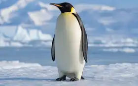
Pingüino emperador
El metabolismo produce el calor; plumaje, grasa y ajustes circulatorios limitan su pérdida. Aun en el frío antártico conserva una temperatura central relativamente estable.
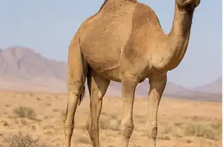
Camello dromedario
Es endotermo. Hidratado mantiene una variación estrecha; con calor intenso y deshidratación puede ampliar mucho su oscilación diaria para ahorrar agua. En el juego se clasifica por su condición de referencia: endo + homeo.
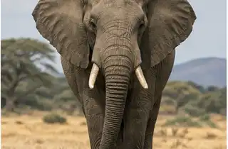
Elefante africano
Genera calor metabólico y regula su temperatura mediante flujo sanguíneo hacia las orejas, conducta y contacto con agua o lodo, manteniendo relativamente estable el interior del cuerpo.
Zorro rojo
El calor procede del metabolismo. El pelaje, la postura, el flujo sanguíneo periférico y la conducta ayudan a conservar o disipar calor sin grandes cambios centrales.
Oso polar
Produce calor metabólico y su aislamiento reduce la pérdida. En reposo regula la temperatura central en un margen estrecho, aunque el ejercicio intenso puede elevarla y crear riesgo de hipertermia.
Ectotermos + poiquilotermos
El ambiente aporta la mayor parte del calor y la temperatura corporal cambia cuando cambian el aire, el agua, el suelo o la radiación solar.
Lagartija del desierto
Se calienta al sol y sobre superficies cálidas; se enfría en sombra o refugios. Su conducta selecciona temperaturas útiles, pero el calor sigue procediendo del ambiente y su temperatura varía.
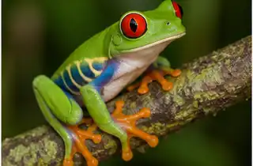
Rana arborícola
Intercambia calor con aire, hojas y agua. Elegir sombra, humedad o refugio modifica su exposición, pero su temperatura corporal fluctúa con el microambiente.
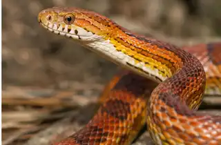
Serpiente del maíz
Obtiene calor de superficies y aire. Puede desplazarse entre zonas cálidas y frescas para regularse conductualmente, aunque su temperatura cambia a lo largo del día.
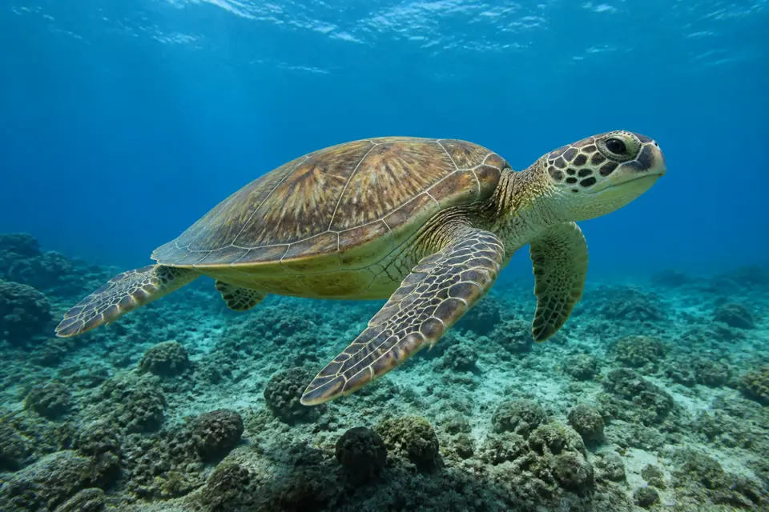
Tortuga verde
La temperatura del agua determina gran parte de su temperatura corporal. La natación, la profundidad y el asoleamiento pueden modificarla, pero no la mantienen fija.
Cocodrilo del Nilo
Alterna entre sol, sombra y agua, y su gran tamaño amortigua cambios rápidos. Aun así, el calor es principalmente externo y su temperatura varía con las condiciones.
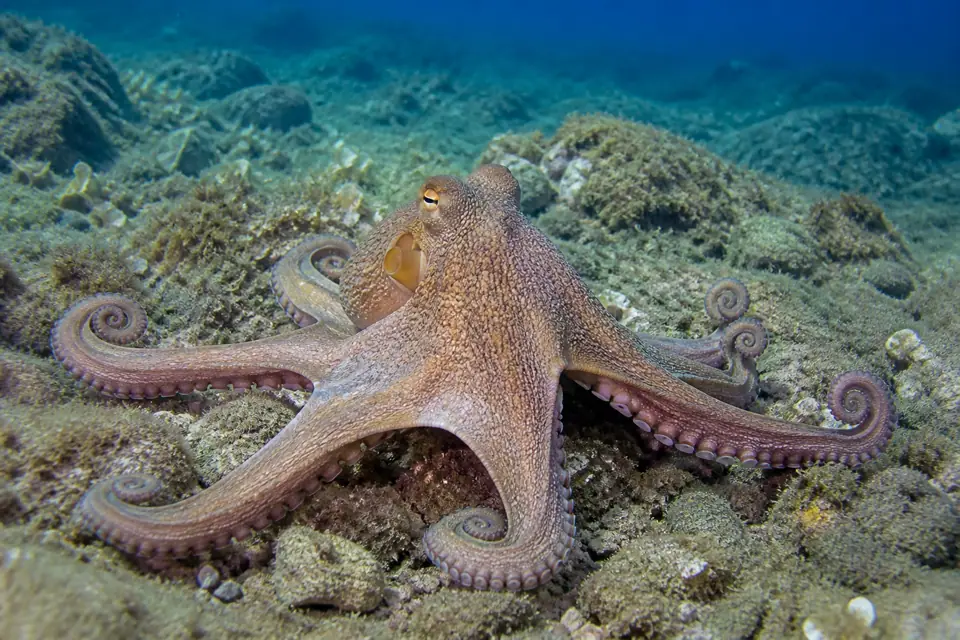
Pulpo común
Su cuerpo intercambia calor con el agua circundante. Al cambiar de profundidad o refugio puede encontrar temperaturas distintas, pero no genera suficiente calor para independizarse del medio.
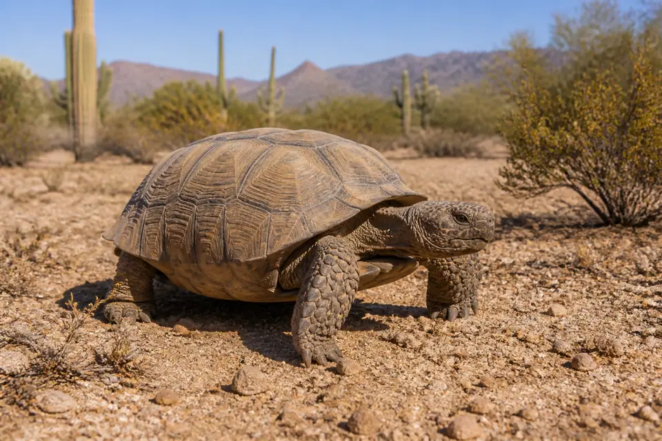
Tortuga del desierto
Usa radiación solar, suelo y aire como fuentes térmicas. Las madrigueras y los horarios de actividad evitan extremos, pero su temperatura corporal continúa siendo variable.
Endotermos + heterotermos
Durante la actividad producen calor y regulan estrechamente; en torpor o hibernación reducen el metabolismo y permiten un descenso marcado de la temperatura.
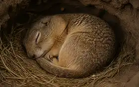
Ardilla terrestre
Es endotérmica cuando está activa. Durante la hibernación disminuye metabolismo y temperatura por periodos prolongados, interrumpidos por despertares.
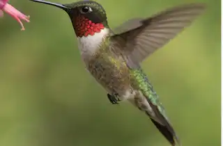
Colibrí
En vuelo sostiene una temperatura alta con un metabolismo extraordinario. Durante el torpor nocturno reduce drásticamente el gasto y la temperatura para conservar energía.
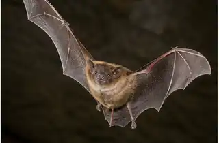
Murciélago
Muchas especies alternan actividad endotérmica con torpor diario o hibernación. Esa alternancia, no una temperatura intermedia permanente, define la heterotermia.
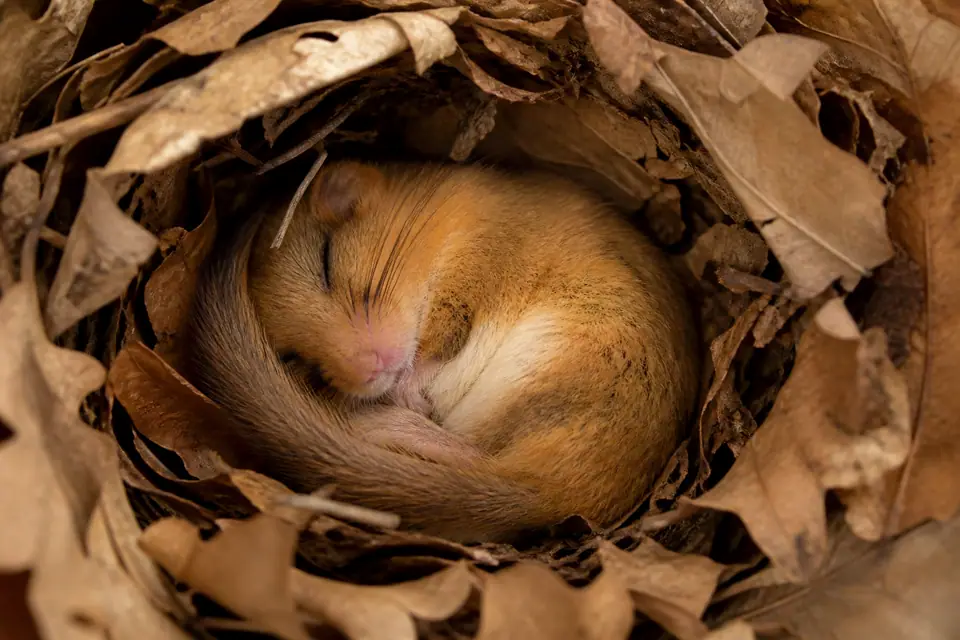
Lirón avellano
Mantiene una temperatura alta durante actividad, pero puede pasar largos periodos en hibernación con metabolismo y temperatura muy reducidos.
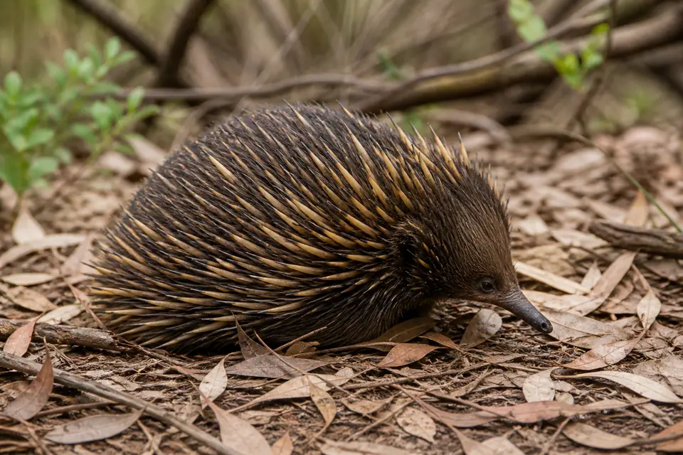
Equidna de hocico corto
Es un mamífero endotermo que puede entrar en torpor o hibernación. En esas fases relaja temporalmente la defensa de una temperatura estrecha.
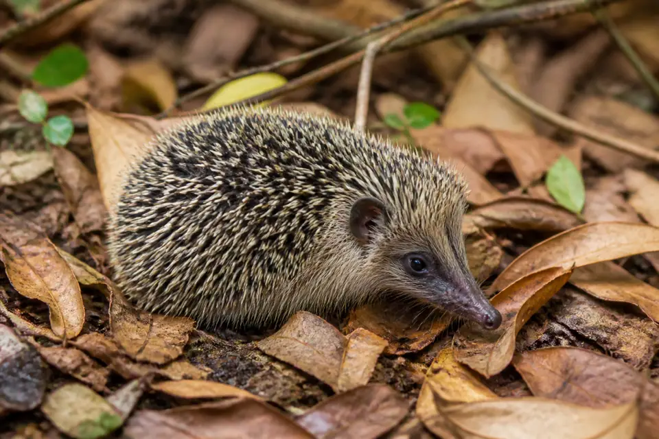
Tenrec erizo menor
Produce calor metabólico, pero puede usar torpor y mostrar grandes cambios estacionales o diarios. Su patrón alternante es un ejemplo marcado de heterotermia.
Ectotermos + homeotermos
El calor procede del ambiente, pero si ese ambiente cambia muy poco, la temperatura corporal también puede permanecer muy estable.
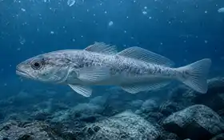
Nototenio antártico
Es ectotermo, pero vive en agua antártica fría que permanece dentro de un intervalo muy estrecho. Por eso su temperatura corporal también cambia poco.
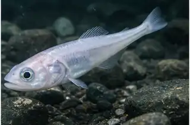
Pez de hielo antártico
Su temperatura depende del agua, no del calor metabólico. En un ambiente marino muy estable, el resultado es una temperatura corporal igualmente estable.
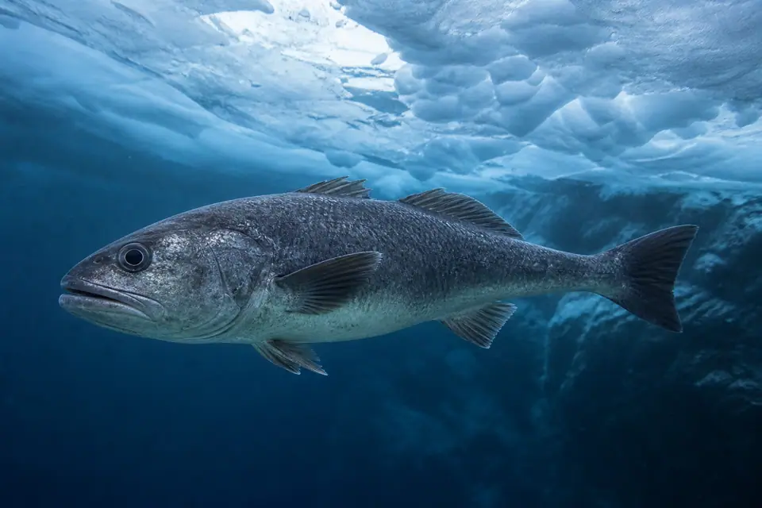
Bacalao antártico
Obtiene calor externamente y está especializado para aguas polares. Mientras el agua fluctúe poco, su temperatura interna también lo hará.
Endotermos + poiquilotermos
Generan calor metabólico, pero su temperatura corporal puede variar ampliamente en vez de mantenerse dentro del margen estrecho típico de otros mamíferos.
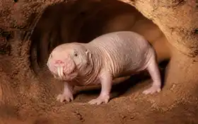
Rata topo desnuda
Posee termogénesis metabólica, pero su baja tasa metabólica, gran pérdida de calor y débil regulación autónoma permiten que la temperatura corporal siga de cerca al ambiente. La colonia y la madriguera estable también aportan regulación conductual.
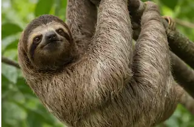
Perezoso de tres dedos
Es mamífero endotermo, pero tiene metabolismo bajo, capacidad limitada para producir calor en frío y una temperatura corporal inusualmente variable y relacionada con el ambiente. También usa postura, sol y estratos del bosque para regularse; algunos tratamientos lo describen como heterotermo.
04 · Para recordar
Puntos clave
Son dos ejes. Fuente del calor y estabilidad térmica responden preguntas distintas.
Endotermo: el metabolismo aporta la mayor parte del calor corporal.
Ectotermo: el ambiente aporta la mayor parte del calor corporal.
Homeotermo: la temperatura permanece en un intervalo relativamente estrecho.
Poiquilotermo: la temperatura corporal fluctúa considerablemente.
Heterotermo: alterna fases reguladas con torpor, hibernación u otras fases variables.
La conducta también cuenta. Buscar sol, sombra, agua o refugio modifica el intercambio de calor sin cambiar su fuente principal.
El contexto importa. Ambiente, hidratación, actividad y estado fisiológico pueden cambiar el patrón observado.
05 · Literatura consultada
Fuentes de información
- 01
Hoey, M. y Sabatier, C. 11.3 Thermoregulation, Concepts in Biology, Loyola Marymount University Pressbooks.
- 02
Boundless Biology. Homeostasis: Thermoregulation, Biology LibreTexts.
- 03
Naked Mole Rat. Revisión de la biología y fisiología de Heterocephalus glaber.
- 04
Mikhalchenko, A. et al. Comparative analysis of naked mole-rat thermogenesis and its potential to maintain euthermia in response to cold.
- 05
Cliffe, R. N. et al. The metabolic response of the Bradypus sloth to temperature.
- 06
Giroud, S. et al. The Torpid State: Recent Advances in Metabolic Adaptations and Protective Mechanisms.
- 07
Wolf, B. O. et al. Extreme and variable torpor among high-elevation Andean hummingbird species.
- 08
Cheng, C.-H. C. y Detrich, H. W. III. Molecular ecophysiology of Antarctic notothenioid fishes.
- 09
El Allali, K. et al. Daily regulation of body temperature rhythm in the camel exposed to experimental desert conditions.
- 10
Hurst, R. J., Øritsland, N. A. y Watts, P. D. Body mass, temperature and cost of walking in polar bears.
- 11
Owen, M. A. et al. The Adrenal Cortisol Response to Increasing Ambient Temperature in Polar Bears.
Ahora sí: a clasificar
¿Puedes separar los dos ejes sin confundirlos?
El juego elegirá animales al azar de este mismo atlas. Si aparece una duda, vuelve a esta guía y busca la razón fisiológica.